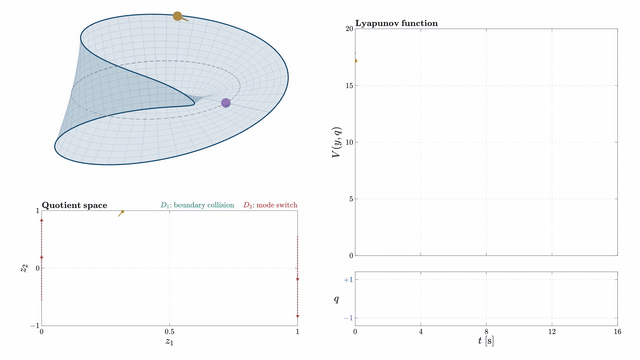
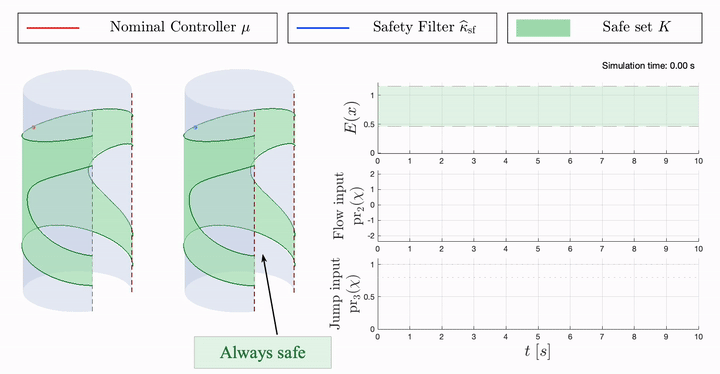
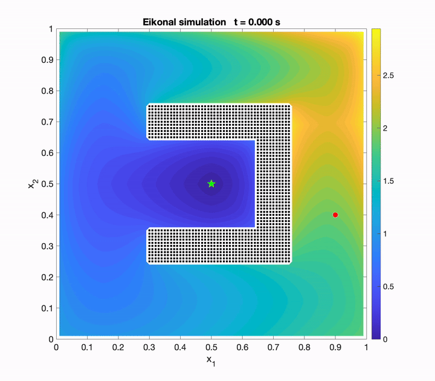
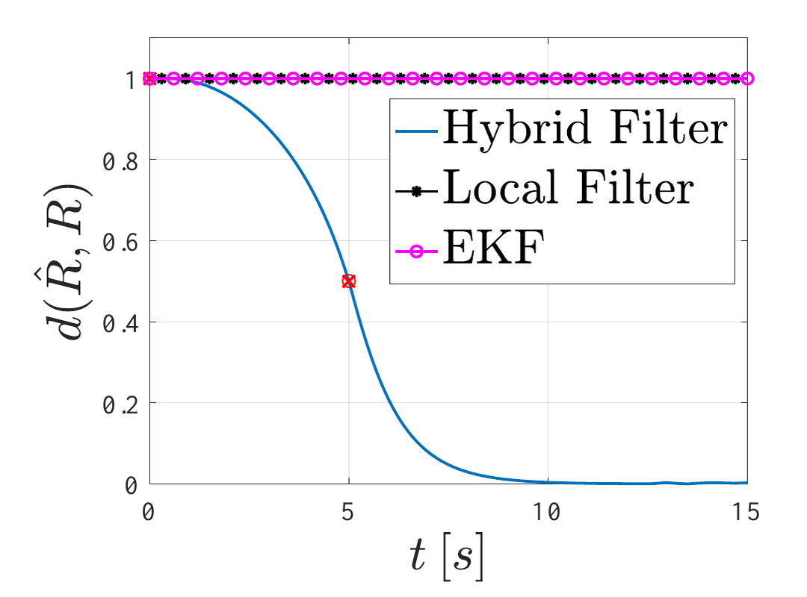
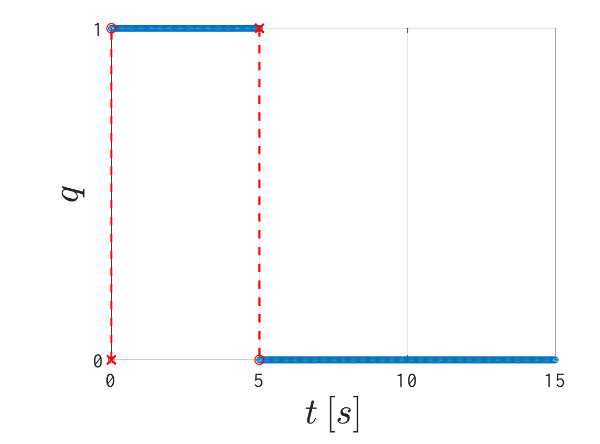

Research
Geometric Hybrid Systems on Manifolds
Many mechanical and aerospace systems combine continuous motion with discrete events while evolving on curved spaces. This project develops a framework for modeling and analyzing these geometric hybrid systems directly on manifolds, without requiring an embedding in Euclidean space or a particular choice of coordinates or distance. It brings together conditions for the existence of solutions, geometric notions of stability, nonsmooth Lyapunov methods, and an invariance principle to study long-term behavior. Applications include hybrid attitude stabilization and a billiard ball moving and experiencing impacts on a Möbius band, illustrating how the framework respects both the system’s geometry and its hybrid dynamics.

Relevant publications
-
[U1]
Geometric Hybrid Dynamical Systems: Part I-Modeling and Stability
Piyush P. Jirwankar, Daniel E. Ochoa, Ricardo G. Sanfelice
-
[C7]
Geometric Hybrid Dynamical Systems on Intrinsic Manifolds: Part II–Hybrid Invariance Principle
Piyush P Jirwankar, Daniel E Ochoa, Ricardo G Sanfelice
-
[C8]
Digital-twin-enabled multi-spacecraft on-orbit operations
Sebastian Henao-Garcia, Michael Kapteyn, Karen E Willcox, Marco Tezzele, Miguel Castroviejo-Fernandez, Taehyeun Kim, Michele Ambrosino, Ilya Kolmanovsky, Himadri Basu, Piyush P. Jirwankar, Ricardo G. Sanfelice
-
[C4]
Solution Sets of Geometric Hybrid Systems: Topological Properties and Existence of Extremal Solutions
Daniel E. Ochoa, Piyush P. Jirwankar, Ricardo G. Sanfelice
Safe Control Design for Geometric Hybrid Systems
This project develops safety tools for controlled hybrid systems whose states evolve on manifolds. Multiple control barrier functions describe a safe region, with conditions that keep trajectories inside it during both continuous motion and discrete jumps. These conditions guide the construction of pointwise optimal control laws and safety filters that modify a nominal controller to enforce safety while respecting the geometry of the state and input spaces. A bouncing pendulum demonstrates the approach: the filter adjusts the applied force and the impact response to keep the motion within a prescribed safe energy range.

Relevant publications
-
[U2]
Multiple Control Barrier Functions for Geometric Hybrid Systems: Modeling and Safe Control Synthesis
Piyush P. Jirwankar, Daniel E. Ochoa, Ricardo G. Sanfelice
-
[C3]
Sufficient Conditions for Set Invariance Using Multiple Barrier Functions in Geometric Hybrid Dynamical Systems
Piyush P. Jirwankar, Daniel E. Ochoa, Ricardo G. Sanfelice
Model Predictive Control for Hybrid Dynamical Systems
This research explores model predictive control for systems that combine continuous evolution with discrete events, focusing on constrained decision-making and reliable operation under disturbances. Applications include spacecraft rendezvous and docking, where a controller must coordinate approach, contact, and subsequent stabilization of the joined spacecraft. The broader aim is to connect hybrid system models with predictive control for complex, multi-phase operations.
Relevant publications
-
[U3]
Input-to-State Stability of Model Predictive Control for Discretized Hybrid Dynamical Systems
Piyush P. Jirwankar, Stefano Di Cairano, Ricardo G. Sanfelice
-
[C2]
A Hybrid Model Predictive Control Framework for Docking and Stabilization of Composite Rigid Spacecraft Dynamics
Himadri Basu, Piyush P. Jirwankar, Ricardo G. Sanfelice, Miguel Castroviejo-Fernandez, Ilya Kolmanovsky
Obstacle Avoidance Using the Eikonal Equation
This project connects motion planning with hybrid feedback control to guide a system toward a target while avoiding obstacles. The Eikonal equation constructs a potential that measures the shortest weighted path to the target through the obstacle-free space. Descending this potential guides motion toward the goal, while hybrid switching between suitable potentials addresses the challenges of achieving global convergence robustly in environments with obstacles.
‖∇u(x)‖ = 1/n(x), x ∈ int(Xs) ∖ A;
u(x) = 0, x ∈ ∂A.
Here, x is the position or configuration, Xs is the obstacle-free set, and A is the target set; int(Xs) denotes the interior of the safe set and ∂A the target boundary. The potential u is the weighted distance to the target, ∇u is its gradient, and ‖·‖ is the Euclidean norm. The positive function n(x) sets the local weighting: choosing n(x) = 1 gives ordinary shortest-path distance within the safe space. In a related robotic manipulator implementation, forward kinematics maps collisions into forbidden joint configurations, a fast sweeping method computes the potential, and gradient-based feedback guides a Quanser QArm through obstacle avoidance and pick-and-place tasks.

Relevant publications
-
[C1]
Hybrid Control for Robust and Global Obstacle Avoidance Via the Eikonal Equation
Piyush P. Jirwankar, Richard Montgomery, Ricardo G. Sanfelice
Global Attitude Estimation on SO(2) and SO(3)
Reliable orientation estimates are essential for feedback control in robotics and aerospace. This project develops hybrid complementary filters directly on SO(2) and SO(3), the spaces of planar and three-dimensional rotations, using noisy attitude and angular velocity measurements. Hysteresis-based switching combines filters that operate in different regions of the rotation space, overcoming the limitations of a single continuous filter while avoiding chattering. The SO(3) design uses Morse functions constructed on real projective space RP³ to shape the correction dynamics. Together, these designs provide global convergence in the absence of noise and input-to-state stability with respect to measurement noise, while preserving the geometry of rotation estimates.

